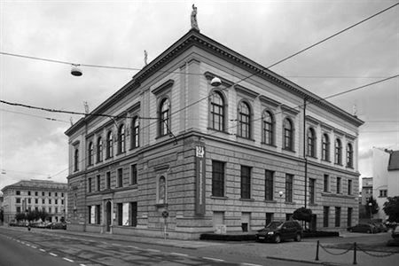
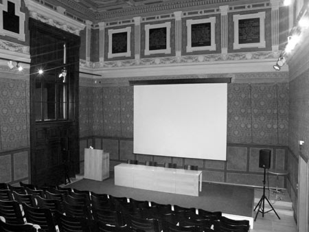
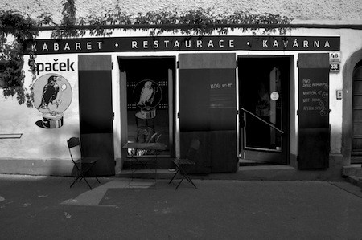

Venues
The symposium will take place in the historical centre of Brno in the Museum of Applied Arts (Uměleckoprůmyslové muzeum) and in café Kabaret Špaček. There are many nice restaurants and pubs around. Some of them offer nice food and most of them offer very good beer or wine. Both venues are within a walking distance from the bus and train stations.
Brno has an international airport served by several low-cost agencies (RyanAir, WizzAir, …) and it is well connected with international airports in Vienna, Prague, and Bratislava. It is also easily accessed by direct trains from Prague (~ 2.5 hours), Berlin (~ 7 hours), Vienna (2 hours), Katowice (3 hours), Warszaw (7 hours), or Bratislava (2 hours), …
TypeTalks: Museum of Applied Arts
The monumental, quasi-historical building on the Brno ring road was purpose-built in 1882 to accommodate the oldest museum of applied arts in Bohemia and Moravia. The museum houses a permanent exhibition of applied arts from the Middle Ages to the present day, comprised of collections of glass, ceramics and porcelain, textiles, furniture and metalware. In addition to seeing the traditional displays visitors can take a virtual tour of the museum exhibits accessible through the Microgallery. The building also contains rooms for temporary exhibitions and The Camera, being the only exhibition facility dedicated exclusively to photography within the Czech art museums.
The Museum of Applied Arts has a lecture room seating 100 people and visitors can use the services of a museum shop and a café with Internet access.
 
Address:
Husova 14
662 26 Brno
Google maps
TypeShorts: Kabaret Špaček
Kabaret Špaček is a small non-smoking restaurant, café and cabaret near the city centre and close to the main venue. Learn more on their page.


Address:
Kopečná 46
Brno
Google maps
Eating and drinking elsewhere
We have prepared a Google map with our favourite eating and drinking places for you:
Food, coffee, beer, and wine in Brno
Design © TypeTalks, 2010–13.
Content © Respective speakers, 2010–13.